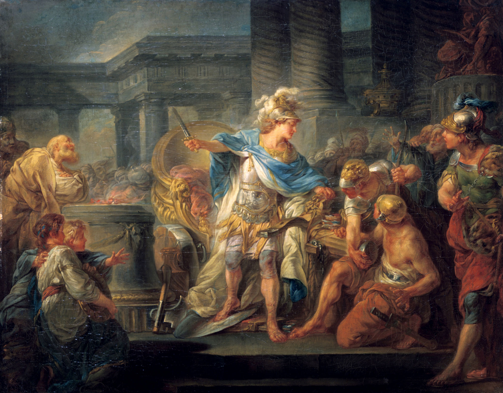
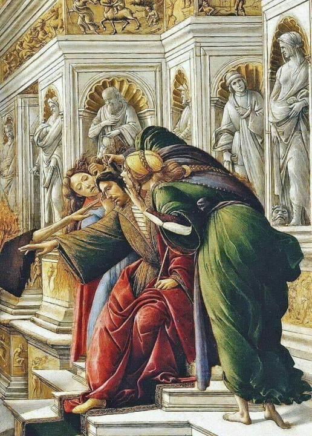

Tuttuğu Altın Olan Kral
Şarap tanrısı Dionisos'un (Bacchus) yoldaşı Satiros, Frigya'yı gezerken Midas'ın gül bahçesinde uyuya kalmış. Satiros'u bulup, on gün on gece sarayında ağırlayan Midas'ın konukseverliğinden etkilenen Dionisos, kralın bir dileğini gerçekleştireceğini söylemiş. Kral Midas da her dokunduğunun altına dönüşmesini ve böylece daha zengin olmayı istemiş. Ancak yemek için dokunduğu yiyecekler, içecekler ve ünlü gül bahçesi bile altına dönüşünce, kral Dionisos'dan bu uğursuz gücü geri almasını istemiş. Midas'ın durumuna acıyan tanrı Dionisos krala Paktalos Irmağı'nda yıkanmasını söylemiş. Bu ırmakta yıkanan Midas, her tuttuğunun altına dönüşmesinden kurtulmuş. Ve o günden bugüne bu ırmakta bulunan altın parçacıkları bu efsaneye bağlanmıştır

İskender'in Kördüğümü
Yeni bir lider arayışında olan Friglere bir kahin tarafından, şehre öküz arabası ile giren ilk adamı kral ilan etmeleri söylenir. Bu kişi kağnısıyla kente giren yoksul bir köylü, Midas'ın babası, Gordios olur. Gordios, kral ilan edildikten sonra öküz arabasını Frig tanrısı Sabazios tapınağına adar. Araba kızılcık dallarından bir düğümle tapınağa bağlanmıştır ve bu düğümü çözecek kişinin Asya'nın hakimi olacağı söylentisi ile ünlenir. Giovanni Paolo Panini (1691-1765) - İskender ve Gordion Düğümü adlı tablosu Büyük İskender, Gordion'a geldiğinde (MÖ 334) düğümü çözmeye çalışır ama başaramaz. Sabri tükenince öfkeyle kılıcını çekip düğümü keser. İskender, gerçekten de Pers İmparatorluğu'nun fatihi ve Asya'nın hakimi olma yolundadır. Ancak 33 yaşında ateşli bir hastalıktan zamansızca ölümü, bilgelerce İskender'in Gordion düğümünü çözmek yerine sabırsızca davranmasının cezası olarak yorumlanır.
İlk Söz: Bekos
Mısırlılar, en kadim uygarlık olarak kendilerini dünyanın ilk insanı sanıyorlardı.Ama gün gelipte, Psammetikos krallığı ele alınca ilk insanların kimler olduğu merakına düştü Psammetikos tüm soruşturmalarına rağmen dünyaya gelen ilk insanların kimler olduğunu öğrenemeyince şu çareye başvurdu.Bir çobana, rastgele iki tane yeni doğmuş çocuk verdi.Çocuklar ağıla konacak ve şöyle büyütülecekti: kimse onların yanında ağzını açıp tek söz söylemeyecekti... psammetikos'un böyle yapmasının ve bu emri vermesinin nedeni, çocukların ağzından çıkacak ilk sözü yakalamaktı... çoban, çocuklara iki yıl bu şekilde baktıktan sonra bir gün kapıyı açıp içeri girdiğinde, çocuklar ayaklarına atılıp ellerini uzatarak "bekos" dediler... [psammetikos] frigyalıların ekmeğe bekos dediklerini öğrendi. Böylece Mısırlılar... Frigyalıların kendilerinden daha eski olduklarını kabul ettiler." İlk söz olan Ekmek tüm medeniyetlerde ve dinlerde kutsaldır. İlk ekmek bu topraklarda tarihin en kadim medeniyeti olan frigyalılar zamanında, POLATLI topraklarında üretilmiştir.

Eşek Kulaklı Midas
Midas'ın eşek kulakları efsanesinin bir diğer ayağı da mitolojiye dayanıyor. Mitolojide yer alan efsaneye göre, sanatın tanrısı Apollon ve flütüyle nam salmış
kırların sevilen tanrısı Pan arasında bir müzik müsabakası düzenlenecektir. Bu müsabakada yargıçlık yapacaklar arasında Kral Midas da yer almaktadır.Müsabaka esnasında Apollon dillere destan bir müzik ortaya koymuştur. Fakat müsabaka sonunda Kral Midas, oyunu Pan'dan yana kullanmış ve Apollon'u kızdırmıştır. Apollon, müziğin kalitesini ayırt edemeyen bir kulağa sahip olduğunu söyleyerek Midas'ın kulaklarını eşek kulağına dönüştürmüştür.Midas, her ne kadar şapka takarak kulaklarını herkesten gizlese de bu sır çok uzun süre saklı kalmamıştır.
Mitolojiye göre,
kralın berberi Midas'ın eşek kulaklarını
görmüş ve bu sırrı başka hiç kimseye söyleyemeyeceği için bir kuyunun içine,günümüze kadar gelmiş o
efsanevi sözleri haykırmıştır: "Midas'ın kulakları, eşek kulakları!"